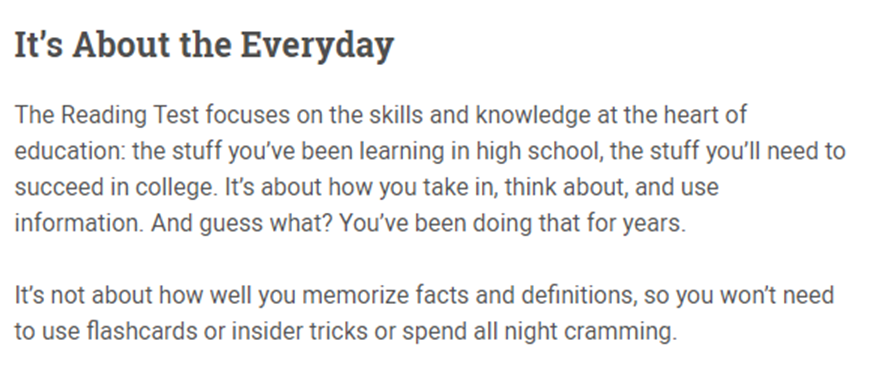
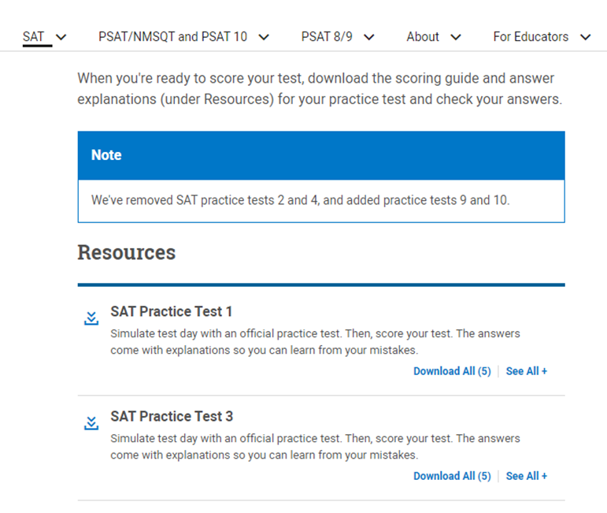
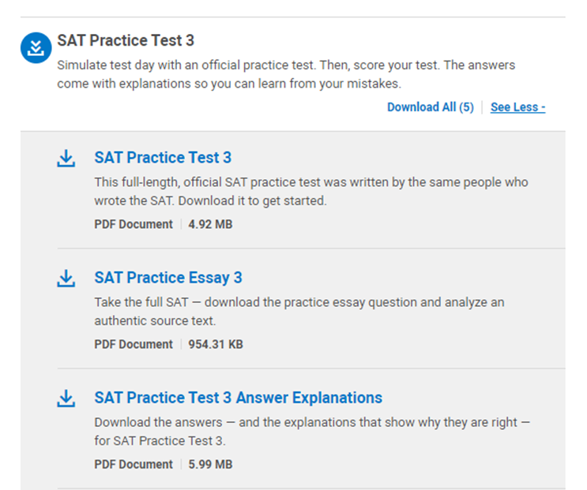
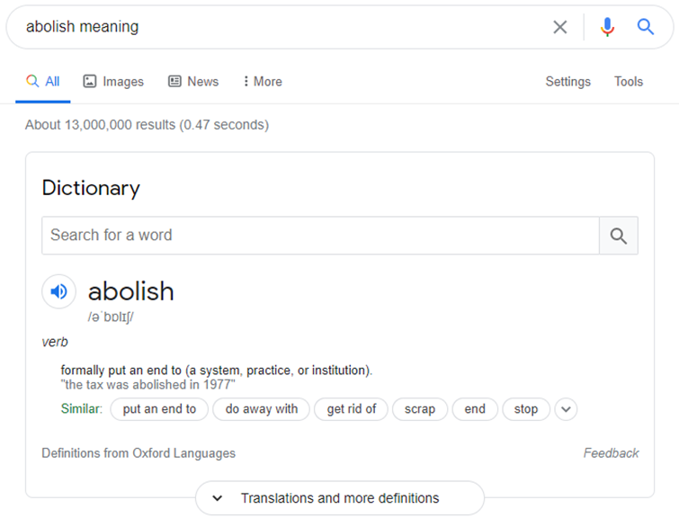
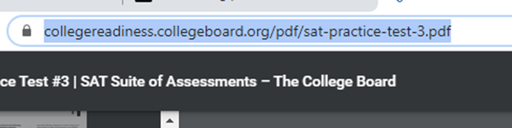
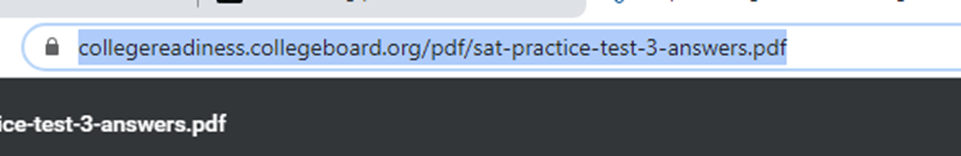

Critical Reading (Tənqidi Oxu) Bölməsinə Necə Hazırlaşmağa Başlamalı?
SAT imtahanına hazırlaşan tələbələrin ən çox çətinlik çəkdikləri bölmə məhz Critical Reading bölməsidir. Bu yazımda bu bölməyə necə hazırlaşmağa başlanmalıdır sualının cavabını 5 addımda acıqlayacağam.
Ancaq gəlin öncəliklə Critical Reading nədir və hansı bacarıqları yoxlayır, onu anlamağa çalışaq.
İmtahanı təşkil edən Collegeboard şirkəti Critical Reading haqqında aşağıdakıları yazır:

…Tənqidi Oxu Testi, məlumatı necə anladığınızı və onu istifadə etmə bacarığınızı yoxlayan imtahandır.
…Critical Reading bölməsində mətnlər oxuyacaq və məlumat qrafiklərini şərh edəcəksiniz. Sonra əldə etdiyiniz məlumatları suallara cavab vermək üçün istifadə edəcəksiniz…
…Bəzi suallar birbaşa verilən informasiyanı soruşur. Ancaq müəllifin sözlərinin mənasını başa düşməyinizi tələb edən sual növləri də mövcuddur. Başqa sözlə onun nəyi nəzərdə tutduğunu, ifadələrin altındakı əsl mənanı anlamalısınız…
Yəni, çoxlarının düşündüyü kimi bu sadəcə Reading Comprehension (Oxuduğunu Anlama) testi deyil. Bu həmçinin Reasoning, yəni məntiqli düşünmə və nəticəyə gəlmə (qərar vermə) testidir.
Bu bölmədə tələbələrin çətinlik çəkmələrinin səbəblərindən ən önəmlisi səhv şəkildə hazırlaşmağa başlamalarıdır. Bəs necə başlasaq doğru istiqamət seçmiş olarıq? Gəlin addım-addım nə etməli olduğumuza nəzər yetirək.
ADDIM #1: Sual Tiplərini İlə Tanış Olun
Atmalı olduğunuz ilk addım budur. Hansı imtahanı verirsizsə verin, sual tiplərini tanımadan, hər sual tipinin ayrı-ayrılıqda nəyi yoxladığını bilmədən, doğru variantı seçmək sizin üçün çox çətin olacaq. SAT-ın bu bölməsi sizin tənqidi oxunuzu yoxladığı üçün isə burada sual tiplərini bilmək xüsusi önəm daşıyır. Bir sonraki məqaləmi məhz sual tipləri və onların tələbləri haqqında yazacam, in şə Allah; maraqlananlar saytımızı, instagram və facebook səhifələrimizi izləyərək yeni yazılardan xəbərdar ola bilərlər.
Qısaca: Reading Bölməsindəki hər sual tipini tanıyın və hansı bacarığı yoxladığını bilin.
ADDIM #2: Sınaq Testi (Practice Test) Yükləyin
SAT imtahanını hazırlayan Collegeboard şirkətinin rəsmi web-səhifəsində 10 ədəd Ödənişsiz Sınaq Testi yer alır. Bunlardan birini yükləməklə işə başlaya bilərsiz.
Bunun üçün ilkin olaraq collegeboard.org saytının SAT Practice Tests bölməsinə bu linki https://collegereadiness.collegeboard.org/sat/practice/full-length-practice-tests istifadə edərək daxil olun və səhifənin ən alt hissəsinə enin.

Burada Resources bölməsindən istədiyiniz testin sağ tərəfində yerləşən “See All”-a klikləyin.

Sınaq testini əldə etmək üçün “SAT Practice Test”-ə, onun cavablarını əldə etmək üçün isə “SAT Practice Test Answer Explanations”-a klikləməyiniz yetərlidir.
Qısaca: Collegeboard saytından bir Sınaq Testi (Practice Test) yükləyin
ADDIM #3: Vaxtı izləmədən və tərcümə edərək sualları işləyin
Suallarla tanış olduqdan və onları yüklədikdən sonra artıq 3-cü mərhələyə keçid edə bilərsiz.
Burada ilkin olaraq etməli olduğunuz şey bütün mətni bilmədiyiniz söz və söz birləşmələrininin mənalarını taparaq başdan sona oxumaqdır. Birbaşa tərcümə etməyi tövsiyyə etmirəm, çünki çox vaxt söz və əsasən də ifadələrin əsl mənalarını bu tərcümələrdən başa düşmək və kontekstə uyğunlaşdırmaq olmur. Bunun yerinə google-da axtarış bölməsində bilmədiyiniz sözün yanına “meaning” yazaraq mənalarını öyrənmək daha məqsədə uyğundur.

Bütün mətni başa düşdüyünüzə əmin olduqdan sonra vaxta nəzarət etmədən sualları işləməyə başlaya bilərsiz. Doğru olduğunu düşündüyünüz cavabları bir kağıza qeyd edin.
Critical Reading bölməsində hər mətndən sonra təxmini 10 ədəd sual yer alır. 3-cü addımı buradakı hər mətn üçün təkrar edin.
Qısaca: Reading bölməsindəki hər mətni tam olaraq başa düşdüyünüzə əmin olduqdan sonra testləri vaxtı izləmədən işləyin.
ADDIM #4: Cavabları yoxlayın
Yəqinki ən zövqlü addım cavabları yoxlamaq olacaq.
Bunun üçün 2-ci addımda açdığınız açıqlamalı cavablardan nəticənizi yoxlaya bilər və səhv etdiyiniz sualların izahına baxa bilərsiz.
Əgər cavabları açmağı unutmusunuzsa geri qayıdıb eyni addımı təkrarlamağa ehtiyac yoxdur. Suallar olan səhifənin adres hissəsinə klikləyin.

Test nömrəsindən sonra -answers əlavə edərək, Enter düyməsinə basın.

Thank me later 😊
Qısaca: Cavabları mütləq yoxlayın
ADDIM #5 : Nəticələri analiz edin
Bu addım isə ən son və ən vacib olanıdır. Quracağınız dərs planı əldə etdiyiniz nəticələrdən asılıdır.
1.Əgər 3-cü addımı yerinə yetirdikdən sonra sualların əksəriyyətinə düzgün cavab vermisizsə, bu o deməkdir ki sizin tənqidi oxumada böyük probleminiz yoxdur və Critical Reading bölməsinə hazırlaşarkən əsasən ingilis dilinizi inkişaf etdirməli və söz bazanızı artırmalısınız. Bundan sonra isə sualları işləyərkən zamana da diqqət yetirməyə başlamaq lazımdır.
2. Əgər cavabların əksəriyyəti səhvdirsə, demək sizin probleminiz sadəcə zaman və söz bazasının azlığı deyil, həmçinin tənqidi oxu ilə əlaqəlidir. Belə olan halda dilinizi inkişaf etdirmək və söz bazanızı artırmaqla yanaşı, Tənqidi oxunu da özünüzdə inkişaf etdirməlisiniz. Hansı yollarla inkişaf etdirə biləcəyinizlə bağlı suallarınız olarsa, mənimlə əlaqə saxlaya bilərsiniz.
Ad günümdə bu məqaləmi sizə hədiyyə etmək istədim, ümid edirəm faydalı oldu 😊
Sonraki yazılarda ətraflı şəkildə Reading Bölməsi üçün söz bazasını genişləndirmə üsullarını və tənqidi oxunu inkişaf etdirmə yollarını paylaşacam in şə Allah.